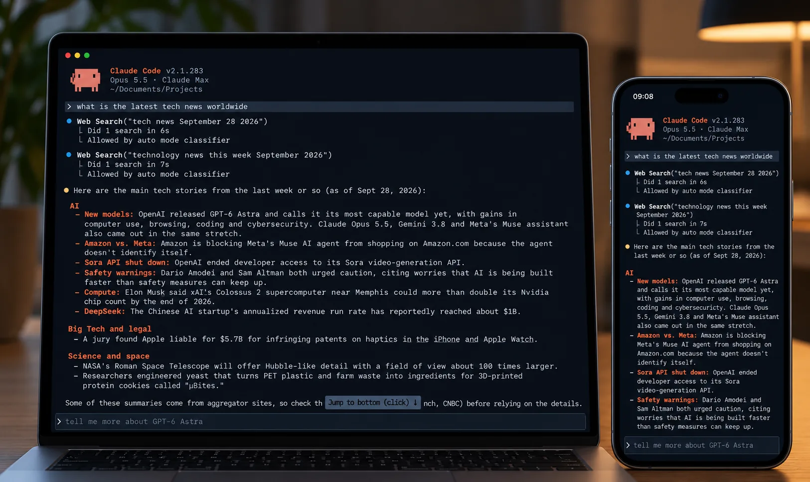
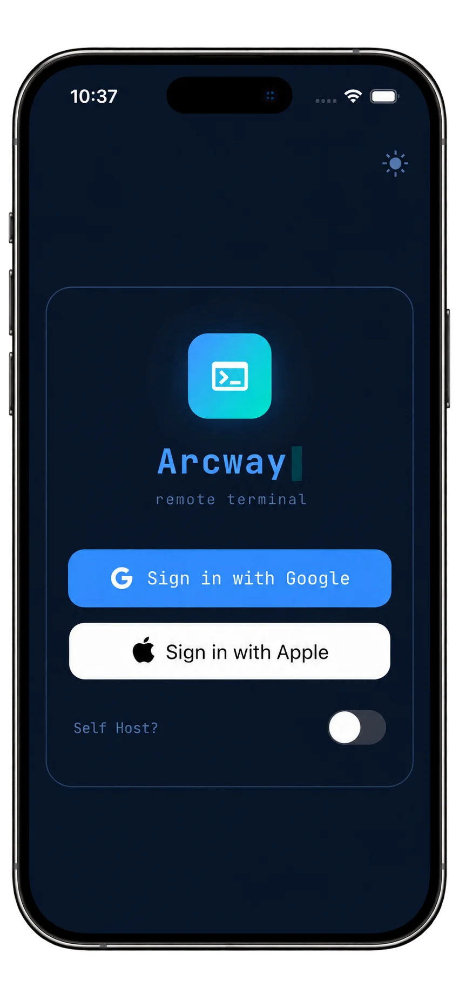
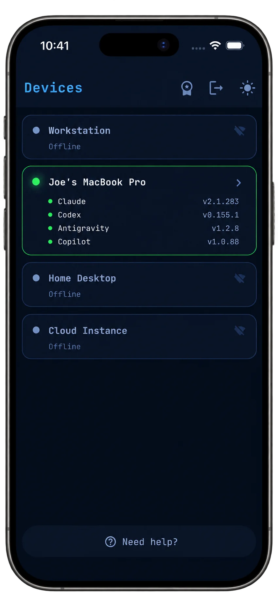
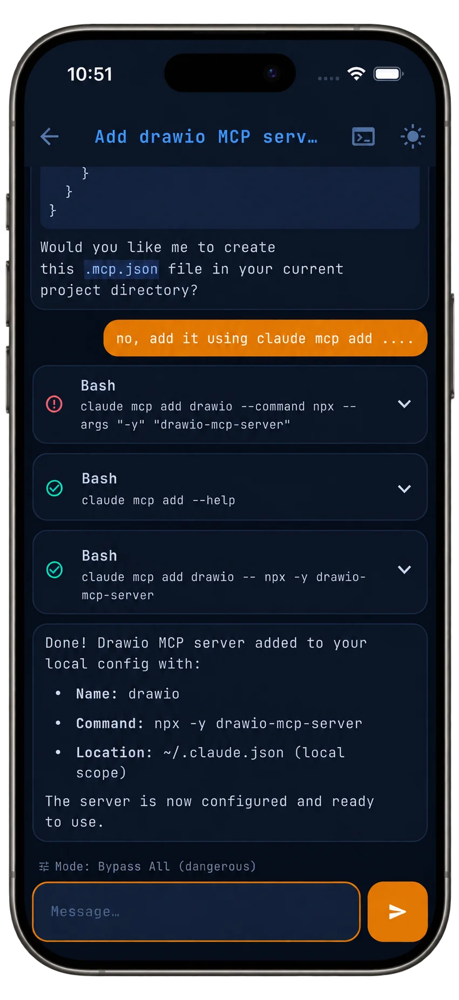

Sign in once. That's the setup.
Google or Apple sign-in, and Arcway finds every Mac you've paired. Flip on Self Host? to point at your own relay instead.
>_ arcway

Arcway pairs your phone with a tiny menu bar app on your Mac over an end-to-end encrypted relay. Your sessions stay between you and your machine — nothing stored in between. Want full control? Run the relay yourself, free forever.
Self-host the relay →


Google or Apple sign-in, and Arcway finds every Mac you've paired. Flip on Self Host? to point at your own relay instead.
See which devices are online and which agents they have ready — Claude, Codex, Antigravity, Copilot — with versions detected automatically.
Tool calls fold into tidy cards, replies render as markdown, and a real PTY is one tap away when you need the raw terminal.
Switch permission modes on the fly. Let the agent run while you're on the train, and jump in the moment it asks.
$ arcway ● connected
Open source. Two commands. Every Arcway feature, free forever.
$ git clone https://github.com/karthik24iyer/arcway-relay-server
$ cd arcway-relay-server
$ docker compose up -dThen toggle Self Host? in the Mac and phone apps and enter your relay URL. Needs Docker and a domain.
It gives you a live, real terminal session on your Mac from your phone, tuned for coding agents like Claude Code, Codex and Gemini — so long-running tasks don't need you at your desk.
No. Both your Mac and phone connect outbound to the relay, so it works behind NAT, corporate Wi-Fi and cellular.
Sessions are end-to-end encrypted between your phone and your Mac. The relay only forwards bytes and stores nothing.
Self-hosting the relay is free forever with every feature. The hosted relay has a free tier with an optional Pro upgrade.
Voice mode, Linux host, and support for Cursor, VS Code, Windsurf and more.